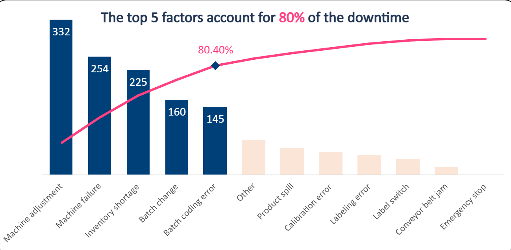
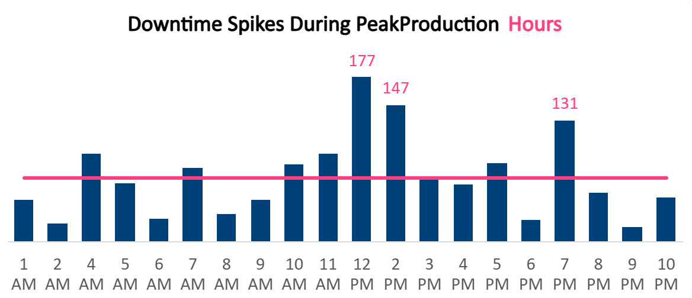

Production Throughput Model
> Power Query ETL and Pareto analysis applied to a high-volume manufacturing line — recovering 20% of lost capacity by proving that systemic machine instability, not operator performance, was driving 80% of unplanned downtime.
Capacity Recovered
20%
Lost Throughput Reclaimed
Pareto Isolation
80 / 20
Vital Few Failure Categories
Primary Bottleneck
Machine
Not Operator — Proven by Data
Downtime Categories
12
Unpivoted & Classified
Operations Analytics — Transferable Methodology
OEE tracking, MTBF analysis, and Pareto bottleneck isolation are standard methodologies in pharmaceutical manufacturing (cold chain line performance), medical device production, and healthcare supply chain distribution operations. The Power Query ETL pattern — wide-to-tall unpivoting of machine log exports — applies directly to any MES, SCADA, or ERP system generating fragmented operational data. The beverage bottling line is the dataset; the operations analytics framework is the transferable asset.
The Analytical Process
ETL & Data Transformation (Power Query)
Raw MES machine logs were exported with 12 separate downtime columns per row — preventing accurate aggregate math. Power Query unpivoted the wide, fragmented dataset into a strict tall analytical schema, enabling Pareto analysis across all failure categories simultaneously.
- Unpivoted 12 downtime factor columns into tall schema
- Cleaned production records for consistency across shifts
- Calculated efficiency metrics accounting for overnight shift overlaps
Downtime Segmentation & Accountability Partition
All downtime events were explicitly partitioned into Operator-Controllable vs. Systemic categories to create a defensible accountability framework — ensuring that hardware failures and material shortages were not attributed to operator performance.
Pareto Root Cause Isolation
Pareto analysis across all 12 downtime categories mathematically isolated Machine Adjustments and Inventory Shortages as the "Vital Few" — responsible for 80% of all lost production time. The CO-600 product line showed the highest downtime variance, pointing to equipment issues specific to that format. Management assumptions about operator accountability were overturned by the data.
Primary Bottlenecks
Machine Adjustments and Inventory Shortages drove 80% of lost throughput — not operator speed. The CO-600 product line showed the highest downtime variance, suggesting equipment-specific instability requiring targeted PM intervention.
Predictable Loss Windows
Lost capacity clustered sharply around shift changes and mandated break periods — creating daily, predictable flatlines in production output. Staggered break protocols and PM scheduling can eliminate these structurally.
Technical Toolkit
Strategic Recommendation
"Shift from reactive break-fix maintenance to a data-driven PM schedule prioritizing the CO-600 line equipment and high-incidence adjustment phases. The Pareto analysis provides the prioritization roadmap — the top-2 failure categories should drive 80% of the PM investment."
GitHub RepositorySupporting Visuals

